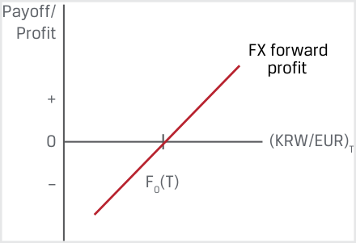
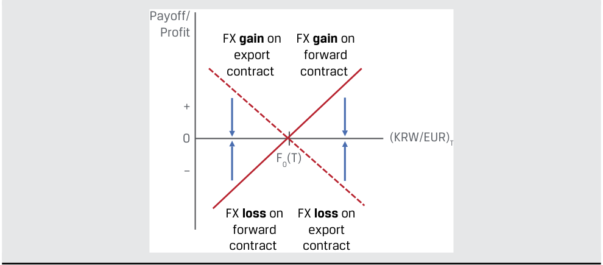
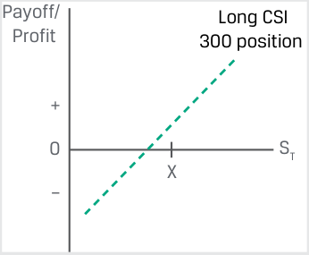
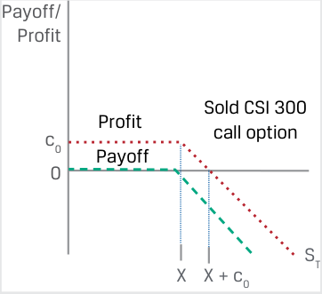
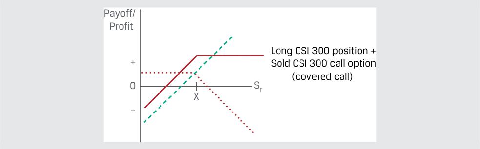
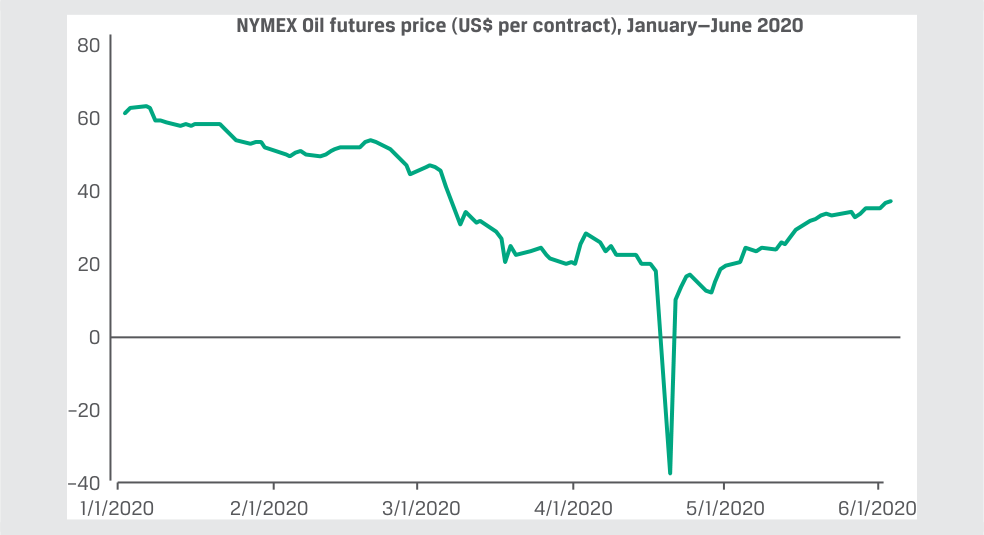
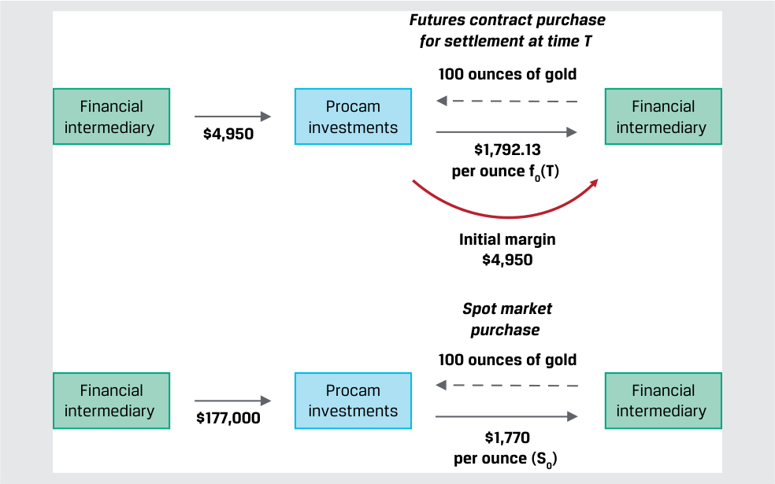
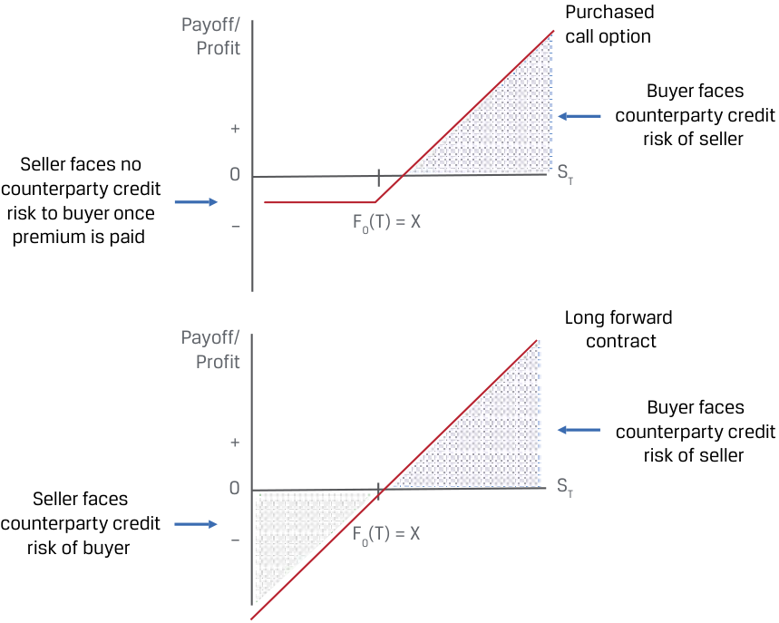

Learning Module 3 Derivative Benefits, Risks, and Issuer and Investor Uses - Part 1: Introduction
Volume 7: Derivatives
Learning Module 3 Derivative Benefits, Risks, and Issuer and Investor Uses
Part 1/2: Introduction (PDF Pages 61–74)
Tập 7: Công cụ Phái sinh (Derivatives)
Học phần 3: Lợi ích, Rủi ro của Công cụ Phái sinh và Mục đích Sử dụng của Tổ chức Phát hành và Nhà đầu tư (Derivative Benefits, Risks, and Issuer and Investor Uses)
Phần 1/2: Giới thiệu (Trang PDF 61–74)
L E A R N I N G M O D U L E 3
H Ọ C P H Ầ N 3
Derivative Benefits, Risks, and Issuer and Investor Uses
Lợi ích, Rủi ro của Công cụ Phái sinh và Mục đích Sử dụng của Tổ chức Phát hành và Nhà đầu tư (Derivative Benefits, Risks, and Issuer and Investor Uses)
LEARNING OUTCOMES
MỤC TIÊU HỌC TẬP (LEARNING OUTCOMES)
Mastery The candidate should be able to: describe benefits and risks of derivative instruments compare the use of derivatives among issuers and investors
| Mức độ thành thạo | Ứng viên cần có khả năng: |
|---|---|
| mô tả các lợi ích và rủi ro của công cụ phái sinh (derivative instruments) | |
| so sánh việc sử dụng công cụ phái sinh giữa các tổ chức phát hành (issuers) và các nhà đầu tư (investors) |
INTRODUCTION
GIỚI THIỆU (INTRODUCTION)
1
1
Earlier lessons described how derivatives expand the set of opportunities available to market participants to create or modify exposure or to hedge the price of an underlying. This learning module describes the benefits and risks of using derivatives and compares their use among issuers and investors.
Các bài học trước đã mô tả cách thức công cụ phái sinh mở rộng tập hợp các cơ hội sẵn có cho những người tham gia thị trường để tạo lập hoặc điều chỉnh mức độ tiếp xúc rủi ro hoặc để phòng vệ giá của một tài sản cơ sở. Học phần này mô tả các lợi ích và rủi ro của việc sử dụng công cụ phái sinh và so sánh việc sử dụng chúng giữa các tổ chức phát hành và các nhà đầu tư.
LEARNING MODULE OVERVIEW
TỔNG QUAN HỌC PHẦN (LEARNING MODULE OVERVIEW)
-
Derivatives allow market participants to allocate, manage, or trade exposure without exchanging an underlying in the cash market.
-
■ Derivatives also offer greater operational and market efficiency than cash markets and allow users to create exposures unavailable in cash markets.
-
■ Derivative instruments can involve risks such as a high degree of implicit leverage and less transparency in some cases than cash instruments, as well as basis, liquidity, and counterparty credit risks. Excessive risk taking in the past by market participants through the use of derivatives has contributed to market destabilization and systemic risk.
-
■ Issuers typically use derivative instruments to offset or hedge market-based underlying exposures that impact their assets, liabilities, and earnings.
-
Các công cụ phái sinh cho phép những người tham gia thị trường phân bổ, quản lý, hoặc giao dịch mức độ tiếp xúc rủi ro mà không cần trao đổi một tài sản cơ sở trên thị trường giao ngay (cash market).
-
Các công cụ phái sinh cũng mang lại hiệu quả vận hành và hiệu quả thị trường (operational and market efficiency) cao hơn so với thị trường giao ngay và cho phép người sử dụng tạo ra các mức độ tiếp xúc rủi ro không có sẵn trên thị trường giao ngay.
-
Các công cụ phái sinh có thể liên quan đến những rủi ro như mức độ đòn bẩy ngầm định (implicit leverage) cao và trong một số trường hợp có tính minh bạch thấp hơn so với các công cụ giao ngay, cũng như rủi ro cơ sở (basis risk), rủi ro thanh khoản (liquidity risk), và rủi ro tín dụng đối tác (counterparty credit risk). Việc chấp nhận rủi ro quá mức trong quá khứ của những người tham gia thị trường thông qua việc sử dụng các công cụ phái sinh đã góp phần gây ra sự mất ổn định thị trường và rủi ro hệ thống (systemic risk).
-
Các tổ chức phát hành thường sử dụng công cụ phái sinh để bù đắp hoặc phòng vệ các mức độ tiếp xúc rủi ro cơ sở theo thị trường có tác động đến tài sản, nợ phải trả, và lợi nhuận của họ.
-
Issuers usually seek hedge accounting treatment for derivatives to minimize income statement and cash flow volatility.
-
Investors use derivatives to modify investment portfolio cash flows, replicate investment strategy returns in cash markets, and/or create exposures unavailable to cash market participants.
-
Các tổ chức phát hành thường tìm kiếm phương pháp kế toán phòng vệ (hedge accounting treatment) cho các công cụ phái sinh nhằm giảm thiểu sự biến động của báo cáo kết quả hoạt động kinh doanh và dòng tiền.
-
Các nhà đầu tư sử dụng công cụ phái sinh để điều chỉnh các dòng tiền của danh mục đầu tư, mô phỏng (replicate) tỷ suất sinh lợi của chiến lược đầu tư trên thị trường giao ngay, và/hoặc tạo ra các mức độ tiếp xúc rủi ro không có sẵn đối với những người tham gia trên thị trường giao ngay.
LEARNING MODULE SELF-ASSESSMENT
TỰ ĐÁNH GIÁ HỌC PHẦN (LEARNING MODULE SELF-ASSESSMENT)
These initial questions are intended to help you gauge your current level of understanding of this learning module.
Những câu hỏi ban đầu này nhằm giúp bạn đánh giá mức độ hiểu biết hiện tại của mình về học phần này.
- Which of the following statements does not describe a likely operational advantage of a futures market transaction as compared to a cash market transaction?
-
A. It is easier to take a short position in the futures market than in the cash market.
-
B. There is greater liquidity in the futures market than in the cash market.
-
C. Cash requirements to buy in the cash market are lower than margin requirements to buy in the futures market.
- Phát biểu nào sau đây không mô tả một lợi thế vận hành có khả năng xảy ra của một giao dịch trên thị trường hợp đồng tương lai so với một giao dịch trên thị trường giao ngay?
-
A. Việc thiết lập một vị thế bán (short position) trên thị trường hợp đồng tương lai dễ dàng hơn so với trên thị trường giao ngay.
-
B. Thị trường hợp đồng tương lai có tính thanh khoản cao hơn so với thị trường giao ngay.
-
C. Yêu cầu về tiền mặt để mua trên thị trường giao ngay thấp hơn so với yêu cầu ký quỹ để mua trên thị trường hợp đồng tương lai.
Solution:
Lời giải:
C is correct. The opposite is true: Margin requirements of a futures contract are typically only a small percentage of the cash requirement to buy the same amount of underlying in the cash market. A and B are both incorrect because both of these statements describe operational advantages of futures markets over cash markets.
C là đáp án đúng. Điều ngược lại mới đúng: Yêu cầu ký quỹ (margin requirements) của một hợp đồng tương lai thường chỉ chiếm một tỷ lệ phần trăm nhỏ so với yêu cầu về tiền mặt để mua cùng một lượng tài sản cơ sở trên thị trường giao ngay. Cả A và B đều không phải đáp án cần chọn vì cả hai phát biểu này đều mô tả đúng các lợi thế vận hành của thị trường hợp đồng tương lai so với thị trường giao ngay.
- Identify which derivative risk fits each of the following statements:
- Xác định rủi ro phái sinh nào phù hợp với từng phát biểu sau đây:
| A. Basis risk | 1. Potential divergence between the cash flow timing of a derivative versus an underlying or hedged transaction |
|---|---|
| B. Liquidity risk | 2. Potential divergence between the expected value of a derivative versus an underlying or hedged transaction |
| C. Counterparty credit risk | 3. Potential for a derivatives contract partici- pant to fail to meet their obligations under an agreement |
| Loại rủi ro | Đặc điểm mô tả |
|---|---|
| A. Rủi ro cơ sở (Basis risk) | 1. Khả năng xảy ra sự phân kỳ giữa thời điểm dòng tiền (cash flow timing) của một công cụ phái sinh so với một tài sản cơ sở hoặc giao dịch được phòng vệ |
| B. Rủi ro thanh khoản (Liquidity risk) | 2. Khả năng xảy ra sự phân kỳ giữa giá trị kỳ vọng (expected value) của một công cụ phái sinh so với một tài sản cơ sở hoặc giao dịch được phòng vệ |
| C. Rủi ro tín dụng đối tác (Counterparty credit risk) | 3. Khả năng một bên tham gia hợp đồng phái sinh không thực hiện được các nghĩa vụ của mình theo thỏa thuận |
Solution
Lời giải:
1. B is correct. Liquidity risk is the potential divergence between the cash flow timing of a derivative versus an underlying or hedged transaction.
1. B là đáp án đúng. Rủi ro thanh khoản (liquidity risk) là khả năng xảy ra sự phân kỳ giữa thời điểm dòng tiền của một công cụ phái sinh so với một tài sản cơ sở hoặc giao dịch được phòng vệ.
2. A is correct. Basis risk is the potential divergence between the expected value of a derivative versus an underlying or hedged transaction.
2. A là đáp án đúng. Rủi ro cơ sở (basis risk) là khả năng xảy ra sự phân kỳ giữa giá trị kỳ vọng của một công cụ phái sinh so với một tài sản cơ sở hoặc giao dịch được phòng vệ.
3. C is correct. Counterparty credit risk is the potential for a derivatives contract participant to fail to meet their obligations under an agreement.
3. C là đáp án đúng. Rủi ro tín dụng đối tác (counterparty credit risk) là khả năng một bên tham gia hợp đồng phái sinh không thực hiện được các nghĩa vụ của mình theo một thỏa thuận.
- Identify which benefit of derivatives use fits each of the following examples:
- Xác định lợi ích nào của việc sử dụng công cụ phái sinh phù hợp với từng ví dụ sau đây:
| A. Price discovery function | 1. Equity market participants monitor index futures prior to the market open for an indication of the direction of cash market prices in early trading. |
|---|---|
| B. Operational advantages | 2. An issuer may wish to lock in its future debt costs in advance of the maturity of an outstanding debt issuance. |
| C. Ability to allocate, trans- | 3. Futures contracts in physical commodities elim- |
| fer, and manage risk | inate the need to directly transport, insure, and store a physical asset in order to take a position in its underlying price. |
| Lợi ích của công cụ phái sinh | Ví dụ minh họa |
|---|---|
| A. Chức năng khám phá giá (Price discovery function) | 1. Những người tham gia thị trường cổ phiếu theo dõi hợp đồng tương lai chỉ số trước khi thị trường mở cửa để tìm dấu hiệu chỉ báo về xu hướng giá trên thị trường giao ngay trong đầu phiên giao dịch. |
| B. Các lợi thế vận hành (Operational advantages) | 2. Một tổ chức phát hành có thể muốn khóa chặt chi phí nợ trong tương lai của mình trước thời điểm đáo hạn của một đợt phát hành nợ đang lưu hành. |
| C. Khả năng phân bổ, chuyển giao, và quản lý rủi ro (Ability to allocate, transfer, and manage risk) | 3. Các hợp đồng tương lai đối với hàng hóa vật chất loại bỏ nhu cầu phải trực tiếp vận chuyển, mua bảo hiểm, và lưu kho một tài sản vật chất để có thể nắm giữ vị thế đối với giá tài sản cơ sở đó. |
Solution
Lời giải:
1. A is correct. Equity market participants monitoring index futures prior to the market open for an indication of the direction of cash market prices in early trading is an example of the derivatives price discovery function.
1. A là đáp án đúng. Việc những người tham gia thị trường cổ phiếu theo dõi hợp đồng tương lai chỉ số trước khi thị trường mở cửa để tìm dấu hiệu chỉ báo về xu hướng giá trên thị trường giao ngay trong đầu phiên giao dịch là một ví dụ về chức năng khám phá giá (price discovery function) của công cụ phái sinh.
2. C is correct. An issuer locking in its future debt costs in advance of the maturity of an outstanding debt issuance is an example of the ability to allocate, transfer, and manage risk.
2. C là đáp án đúng. Việc một tổ chức phát hành khóa chặt chi phí nợ trong tương lai của mình trước thời điểm đáo hạn của một đợt phát hành nợ đang lưu hành là một ví dụ về khả năng phân bổ, chuyển giao, và quản lý rủi ro.
3. B is correct. Futures contracts in physical commodities eliminating the need to directly transport, insure, and store a physical asset in order to take a position in its underlying price is an example of the operational advantages of a derivative.
3. B là đáp án đúng. Việc các hợp đồng tương lai đối với hàng hóa vật chất loại bỏ nhu cầu phải trực tiếp vận chuyển, mua bảo hiểm, và lưu kho một tài sản vật chất để có thể nắm giữ vị thế đối với giá tài sản cơ sở đó là một ví dụ về các lợi thế vận hành (operational advantages) của một công cụ phái sinh.
- Which of the following hedge accounting designations is appropriate for categorizing a corporate issuer’s use of an interest swap converting a floating-rate debt into a fixed-rate debt?
- A. Fair value hedge
B. Cash flow hedge
- Cách phân loại kế toán phòng vệ (hedge accounting designation) nào sau đây là phù hợp để phân loại việc một tổ chức phát hành doanh nghiệp sử dụng hợp đồng hoán đổi lãi suất nhằm chuyển đổi một khoản nợ lãi suất thả nổi thành một khoản nợ lãi suất cố định?
-
A. Phòng vệ giá trị hợp lý (Fair value hedge)
-
B. Phòng vệ dòng tiền (Cash flow hedge)
-
C. Phòng vệ khoản đầu tư ròng (Net investment hedge)
C. Net investment hedge
Lời giải:
Solution:
B là đáp án đúng. Phương pháp kế toán phòng vệ dòng tiền (cash flow hedge) là phù hợp cho các trường hợp trong đó một dòng tiền biến đổi được chuyển đổi thành một dòng tiền cố định thông qua việc sử dụng một công cụ phái sinh. A không đúng vì phòng vệ giá trị hợp lý (fair value hedge) là phương pháp kế toán phù hợp cho các hợp đồng phái sinh giúp bù đắp những biến động trong giá trị hợp lý của tài sản hoặc nợ phải trả cơ sở. C không đúng vì phòng vệ khoản đầu tư ròng (net investment hedge) bù đắp rủi ro ngoại tệ đối với giá trị của một công ty con ở nước ngoài.
B is correct. Cash flow hedge treatment is appropriate for instances in which a variable cash flow is converted to a fixed cash flow through the use of a derivative. A is incorrect because a fair value hedge is appropriate accounting treatment for derivative contracts that offset fluctuations in the fair value of the underlying. C is incorrect because a net investment hedge offsets the foreign currency risk of the value of a foreign subsidiary.
CÁC LỢI ÍCH CỦA CÔNG CỤ PHÁI SINH (DERIVATIVE BENEFITS)
DERIVATIVE BENEFITS
2
describe benefits and risks of derivative instruments
mô tả các lợi ích và rủi ro của công cụ phái sinh
Earlier lessons demonstrated how market participants use derivative instruments as an alternative to cash markets to hedge or offset commercial risk as well as create or modify exposure to the price of an underlying. We now take a more detailed look at these and other benefits of the use of derivatives, while also considering several risks unique to derivative instruments.
Các bài học trước đã minh họa cách thức những người tham gia thị trường sử dụng các công cụ phái sinh như một giải pháp thay thế cho thị trường giao ngay nhằm phòng vệ hoặc bù đắp rủi ro thương mại cũng như tạo lập hoặc điều chỉnh mức độ tiếp xúc đối với giá của một tài sản cơ sở. Bây giờ chúng ta sẽ xem xét chi tiết hơn những lợi ích này cùng các lợi ích khác của việc sử dụng công cụ phái sinh, đồng thời cân nhắc một số rủi ro đặc thù của các công cụ phái sinh.
Derivative instruments provide users the opportunity to allocate, transfer, and/or manage risk without trading an underlying. Cash or spot market prices for financial instruments and commercial goods and services are a critical source of information for the decision to buy or sell. However, in many instances, issuers and investors face a timing difference between an economic decision and the ability to transact in a cash market.
Các công cụ phái sinh mang lại cho người sử dụng cơ hội để phân bổ, chuyển giao, và/hoặc quản lý rủi ro mà không cần giao dịch một tài sản cơ sở. Giá trên thị trường tiền mặt hoặc giao ngay đối với các công cụ tài chính cũng như hàng hóa và dịch vụ thương mại là một nguồn thông tin quan trọng cho quyết định mua hoặc bán. Tuy nhiên, trong nhiều trường hợp, các tổ chức phát hành và các nhà đầu tư phải đối mặt với sự chênh lệch về thời gian (timing difference) giữa một quyết định kinh tế và khả năng thực hiện giao dịch trên thị trường giao ngay.
For example, issuers face the following timing differences when making operational and financing decisions:
Ví dụ, các tổ chức phát hành phải đối mặt với những chênh lệch về thời gian sau đây khi đưa ra các quyết định vận hành và tài trợ:
-
A manufacturer may need to order commodity inputs for its production process in advance of receiving finished-goods orders.
-
A retailer may await a shipment of goods priced in a foreign currency before selling domestic currency to make payment.
-
An issuer may wish to lock in its future debt costs in advance of the maturity of an outstanding debt issuance.
-
Một nhà sản xuất có thể cần đặt mua nguyên vật liệu hàng hóa đầu vào cho quy trình sản xuất của mình trước khi nhận được các đơn đặt hàng thành phẩm.
-
Một nhà bán lẻ có thể phải chờ một lô hàng được định giá bằng ngoại tệ trước khi bán nội tệ để thực hiện thanh toán.
-
Một tổ chức phát hành có thể muốn khóa chặt chi phí nợ trong tương lai của mình trước thời điểm đáo hạn của một đợt phát hành nợ đang lưu hành.
Investors may face similar timing issues when making portfolio decisions that are separate from cash market transactions, as in the following cases:
Các nhà đầu tư có thể đối mặt với những vấn đề về thời gian tương tự khi đưa ra các quyết định danh mục đầu tư tách biệt khỏi các giao dịch trên thị trường giao ngay, như trong các trường hợp sau:
-
An investor may seek to capitalize on a market view but lack the necessary cash on hand to transact in the spot market.
-
In anticipation of a future stock dividend, debt coupon, or principal repayment, an investor may decide today how it will reinvest the proceeds in the future.
-
Một nhà đầu tư có thể tìm cách tận dụng một quan điểm thị trường (market view) nhưng lại thiếu lượng tiền mặt sẵn có cần thiết để giao dịch trên thị trường giao ngay.
-
Với dự kiến sẽ nhận được một khoản cổ tức cổ phiếu, lãi coupon trái phiếu, hoặc khoản hoàn trả vốn gốc trong tương lai, nhà đầu tư có thể quyết định ngay hôm nay về cách thức tái đầu tư số tiền thu được đó trong tương lai.
The ability to buy or sell a derivative instrument today at a pre-agreed price at a future date can bridge the timing gap between an economic decision and the ability to transact in underlying price risk under these scenarios. The use of forward commitments or contingent claims to allocate or transfer risk across time and among market participants able and willing to accept those exposures is a consistent theme in derivative markets. Example 1 builds on an earlier illustration of how an issuer may benefit from the use of a derivative associated with a commercial contract.
Khả năng mua hoặc bán một công cụ phái sinh ngay hôm nay tại một mức giá đã thỏa thuận trước vào một ngày trong tương lai có thể thu hẹp khoảng cách thời gian giữa một quyết định kinh tế và khả năng giao dịch rủi ro giá tài sản cơ sở trong các kịch bản này. Việc sử dụng các cam kết kỳ hạn hoặc các quyền đòi hỏi có điều kiện để phân bổ hoặc chuyển giao rủi ro qua thời gian và giữa những người tham gia thị trường có khả năng và sẵn sàng chấp nhận các mức độ tiếp xúc rủi ro đó là một chủ đề xuyên suốt trên các thị trường phái sinh. Ví dụ 1 phát triển tiếp một minh họa trước đây về cách thức một tổ chức phát hành có thể hưởng lợi từ việc sử dụng một công cụ phái sinh gắn liền với một hợp đồng thương mại.
EXAMPLE 1
VÍ DỤ 1 (EXAMPLE 1)
Foreign Exchange Risk Transfer of an Export Contract
Chuyển giao Rủi ro Ngoại hối của một Hợp đồng Xuất khẩu (Foreign Exchange Risk Transfer of an Export Contract)
Recall Montau AG, the German capital goods producer introduced earlier, which signs a commercial contract with Jeon, Inc., a Korean manufacturer, to deliver a laser cutting machine at a price of KRW650,000,000 in 75 days. Montau has fixed domestic currency (EUR) costs and therefore faces a timing mismatch between EUR costs incurred and EUR revenue realized upon the delivery of the machine and sale of KRW received in exchange for EUR in the spot FX market.
Hãy nhớ lại Montau AG, nhà sản xuất tư liệu sản xuất của Đức đã được giới thiệu trước đó, công ty đã ký một hợp đồng thương mại với Jeon, Inc., một nhà sản xuất Hàn Quốc, để giao một máy cắt laser với mức giá 650.000.000 KRW sau 75 ngày. Montau có các chi phí cố định tính bằng đồng nội tệ (EUR) và do đó phải đối mặt với sự lệch pha về thời gian (timing mismatch) giữa các chi phí phát sinh bằng EUR và doanh thu bằng EUR thực hiện được khi giao máy và bán số KRW nhận được để đổi lấy EUR trên thị trường ngoại hối (FX) giao ngay.
Describe Montau’s currency exposure and how an FX forward contract may be used to mitigate its FX price risk.
Hãy mô tả mức độ tiếp xúc rủi ro tiền tệ của Montau và cách thức một hợp đồng kỳ hạn ngoại hối (FX forward contract) có thể được sử dụng để giảm thiểu rủi ro tỷ giá FX của công ty.
Montau will receive KRW in 75 days, which it must sell to cover its EUR costs. This exposes the firm to KRW/EUR exchange rate changes for 75 days. Specifically, if the KRW depreciates versus the EUR, Montau will be able to
Montau sẽ nhận được KRW sau 75 ngày, và công ty phải bán số KRW này đi để trang trải các chi phí bằng EUR của mình. Điều này khiến công ty tiếp xúc với những biến động của tỷ giá hối đoái KRW/EUR trong suốt 75 ngày. Cụ thể, nếu đồng KRW mất giá so với đồng EUR (tức là tỷ giá KRW/EUR tăng lên — cần nhiều KRW hơn để đổi lấy 1 EUR), Montau sẽ
purchase fewer EUR than expected with the KRW proceeds, resulting in a loss due to the FX timing mismatch. Montau’s exposure profile due to the mismatch is as follows:
mua được ít EUR hơn so với dự kiến bằng số tiền thu về bằng KRW, dẫn đến một khoản lỗ do sự lệch pha thời gian ngoại hối. Cấu trúc tiếp xúc rủi ro của Montau do sự lệch pha này như sau:
Chú thích hình ảnh: - Mức độ tiếp xúc rủi ro của hợp đồng xuất khẩu (Export contract exposure): Khi tỷ giá $(\text{KRW/EUR})_T$ tăng lên (đồng KRW yếu đi so với EUR), giá trị nhận được / lợi nhuận tính bằng EUR của Montau giảm tuyến tính từ miền dương ($+$) xuống miền âm ($-$).
In order to mitigate its export contract exposure, Montau enters an FX forward to sell KRW and purchase EUR at a fixed price [F0(T)] in 75 days to eliminate the KRW/EUR exchange rate mismatch arising from the export contract. The FX forward payoff and profit profile is as follows:
Để giảm thiểu mức độ tiếp xúc rủi ro từ hợp đồng xuất khẩu của mình, Montau tham gia vào một hợp đồng kỳ hạn ngoại hối (FX forward) để bán KRW và mua EUR tại một mức giá cố định $[F_0(T)]$ sau 75 ngày nhằm loại bỏ sự lệch pha tỷ giá hối đoái KRW/EUR phát sinh từ hợp đồng xuất khẩu. Cấu trúc giá trị nhận được và lợi nhuận của hợp đồng kỳ hạn FX như sau:

Chú thích hình ảnh: - Lợi nhuận hợp đồng kỳ hạn FX (FX forward profit): Đường thẳng dốc lên từ miền âm qua điểm $F_0(T)$ trên trục hoành $(\text{KRW/EUR})_T$ lên miền dương (khi đồng KRW mất giá so với EUR, tức $(\text{KRW/EUR})_T > F_0(T)$, hợp đồng bán kỳ hạn KRW có lãi).
The FX forward payoff and profit profile offsets Montau’s export contract exposure as a hedge, as shown in the following combined diagram:
Cấu trúc giá trị nhận được và lợi nhuận của hợp đồng kỳ hạn FX bù đắp cho mức độ tiếp xúc rủi ro từ hợp đồng xuất khẩu của Montau như một công cụ phòng vệ (hedge), như được thể hiện trong sơ đồ kết hợp sau đây:

Chú thích hình ảnh: - Khi $(\text{KRW/EUR})_T < F_0(T)$: Khoản lãi FX trên hợp đồng xuất khẩu (FX gain on export contract) được bù trừ bởi Khoản lỗ FX trên hợp đồng kỳ hạn (FX loss on forward contract). - Khi $(\text{KRW/EUR})_T > F_0(T)$: Khoản lãi FX trên hợp đồng kỳ hạn (FX gain on forward contract) bù đắp cho Khoản lỗ FX trên hợp đồng xuất khẩu (FX loss on export contract).
The ability to trade and/or manage risk using derivatives extends to the creation of exposure profiles, which are unavailable in cash markets. The following example combines a long cash position with a sold derivative to increase an investor’s expected return, based on a specific market view.
Khả năng giao dịch và/hoặc quản lý rủi ro bằng cách sử dụng các công cụ phái sinh còn mở rộng sang việc tạo ra các cấu trúc tiếp xúc rủi ro (exposure profiles) vốn không có sẵn trên các thị trường giao ngay. Ví dụ sau đây kết hợp một vị thế mua giao ngay (long cash position) với một công cụ phái sinh đã bán (sold derivative) nhằm làm tăng tỷ suất sinh lợi kỳ vọng của nhà đầu tư dựa trên một quan điểm thị trường cụ thể.
EXAMPLE 2
VÍ DỤ 2 (EXAMPLE 2)
Covered Call Option Strategy
Chiến lược Quyền chọn Mua có Bảo đảm (Covered Call Option Strategy)
South China Sprintwyck Investments (SCSI) has a Chinese equity portfolio that has outperformed in the first half of the year due to an overweight position in health care industry shares. SCSI holds a long position in the Shenzhen China Securities Index (CSI) 300 Health Care Index (CSI 300) traded on the China Financial Futures Exchange (CFFEX). SCSI’s CIO expects volatility in the CSI
South China Sprintwyck Investments (SCSI) có một danh mục đầu tư cổ phiếu Trung Quốc đạt hiệu quả vượt trội trong nửa đầu năm nhờ vị thế tỷ trọng cao (overweight position) đối với các cổ phiếu ngành chăm sóc sức khỏe. SCSI nắm giữ một vị thế mua trong Chỉ số Chăm sóc Sức khỏe CSI 300 của Chứng khoán Trung Quốc Thâm Quyến (Shenzhen China Securities Index 300 Health Care Index – CSI 300) được giao dịch trên Sở Giao dịch Hợp đồng Tương lai Tài chính Trung Quốc (China Financial Futures Exchange – CFFEX). Giám đốc đầu tư (CIO) của SCSI kỳ vọng độ biến động của chỉ số CSI
300 to decline and the CSI 300 price at year-end to be at or slightly above the current spot price. Rather than sell the CSI 300 position today in the cash market, she decides to sell a CSI 300 call option at an exercise price 5% above the current spot market price for the remaining six months of the year.
300 sẽ giảm xuống và mức giá CSI 300 vào cuối năm sẽ ở mức bằng hoặc cao hơn đôi chút so với mức giá giao ngay hiện hành. Thay vì bán vị thế CSI 300 ngay hôm nay trên thị trường giao ngay, bà quyết định bán một quyền chọn mua CSI 300 tại mức giá thực hiện cao hơn 5% so với giá thị trường giao ngay hiện hành cho sáu tháng còn lại của năm.
Describe the difference in SCSI’s CSI 300 payoff profile between 1.) the long cash position and 2.) the sold call option plus long cash position (referred to as a covered call strategy) at the end of the year.
Hãy mô tả sự khác biệt trong cấu trúc giá trị nhận được đối với CSI 300 của SCSI giữa 1.) vị thế mua giao ngay (long cash position) và 2.) quyền chọn mua đã bán cộng với vị thế mua giao ngay (được gọi là chiến lược quyền chọn mua có bảo đảm – covered call) vào cuối năm.
1. SCSI’s long cash position will rise or fall in value as the CSI 300 spot price changes until the end of the year.
1. Vị thế mua giao ngay của SCSI sẽ tăng hoặc giảm giá trị khi giá giao ngay của CSI 300 thay đổi cho đến cuối năm.

Chú thích hình ảnh: - Vị thế mua chỉ số CSI 300 (Long CSI 300 position): Đường thẳng tuyến tính dốc lên theo giá giao ngay $S_T$.
The difference between 1.) and 2.) is the sale of a CSI 300 call option. SCSI sells the call and receives an upfront premium. SCSI assumes unlimited downside risk as the CSI 300 price rises above the exercise price:
Sự khác biệt giữa 1.) và 2.) là việc bán một quyền chọn mua CSI 300. SCSI bán quyền chọn mua và nhận được một khoản phí quyền chọn trả trước. SCSI gánh chịu rủi ro thua lỗ không giới hạn trên quyền chọn khi mức giá CSI 300 tăng vượt quá giá thực hiện:

Chú thích hình ảnh: - Quyền chọn mua CSI 300 đã bán (Sold CSI 300 call option): Đường giá trị nhận được (Payoff) bằng $0$ khi $S_T \le X$ và dốc xuống âm khi $S_T > X$; đường lợi nhuận (Profit) ở mức $+c_0$ khi $S_T \le X$, cắt trục hoành tại $X + c_0$ và giảm tuyến tính khi $S_T > X$.
2. The combination of the long CSI 300 cash position and the short CSI 300 call option results in the profit profile represented by the solid line below:
2. Sự kết hợp giữa vị thế mua giao ngay CSI 300 và vị thế bán quyền chọn mua CSI 300 mang lại cấu trúc lợi nhuận được biểu diễn bằng đường nét liền dưới đây:

Chú thích hình ảnh: - Vị thế mua CSI 300 + Quyền chọn mua CSI 300 đã bán (chiến lược covered call): Đường nét liền tăng tuyến tính theo $S_T$ (cao hơn vị thế mua giao ngay một đoạn bằng phí quyền chọn $c_0$) cho đến điểm $X$, sau đó nằm ngang (bị giới hạn mức lãi tối đa) khi $S_T > X$.
The covered call strategy payoff may be described as follows:
Giá trị nhận được của chiến lược quyền chọn mua có bảo đảm (covered call) có thể được mô tả như sau:
-
CSI 300 appreciates by less than 5%: The call option expires unexercised. SCSI’s profit equals the long CSI 300 position plus the call premium.
-
CSI 300 appreciates by more than 5%: The call option is exercised. SCSI must pay the option buyer an amount equal to the gain on its long CSI 300 position above the exercise price. The option payoff is said to be “covered” by the long cash position. SCSI retains the call p remium.
-
Chỉ số CSI 300 tăng giá dưới 5% ($S_T \le X$): Quyền chọn mua hết hạn mà không được thực hiện. Lợi nhuận của SCSI bằng lợi nhuận của vị thế mua CSI 300 cộng với khoản phí quyền chọn mua nhận được.
-
Chỉ số CSI 300 tăng giá trên 5% ($S_T > X$): Quyền chọn mua được thực hiện. SCSI phải trả cho người mua quyền chọn một khoản tiền bằng đúng phần lãi trên vị thế mua CSI 300 của mình tính từ mức giá thực hiện trở lên. Giá trị thanh toán của quyền chọn được gọi là đã được “bảo đảm” (covered) bởi vị thế mua giao ngay. SCSI vẫn giữ lại khoản phí quyền chọn mua.
Derivative instrument prices serve a price discovery function beyond the underlying cash or spot market. For example, futures prices are often seen as revealing information about the direction of cash markets in the future, although they cannot be strictly considered an unbiased forecast of future spot prices.
Giá của các công cụ phái sinh phục vụ chức năng khám phá giá (price discovery function) vượt ra ngoài thị trường tiền mặt hoặc giao ngay của tài sản cơ sở. Ví dụ, giá hợp đồng tương lai thường được coi là tiết lộ thông tin về xu hướng của các thị trường giao ngay trong tương lai, mặc dù về mặt chặt chẽ chúng không thể được coi là một dự báo không chệch (unbiased forecast) về giá giao ngay trong tương lai.
Market participants often use futures prices to gauge the direction of cash markets in the future in the following ways:
Những người tham gia thị trường thường sử dụng giá hợp đồng tương lai để đánh giá xu hướng của thị trường giao ngay trong tương lai theo những cách sau:
-
Equity market participants frequently monitor equity index futures prices prior to the stock market open for an indication of the direction of cash market prices in early trading.
-
Analysts often use interest rate futures markets to extract investor expectations of a central bank benchmark interest rate increase or decrease at a future meeting.
-
Commodity futures prices are a gauge of supply and demand dynamics between producers, consumers, and investors across maturities.
-
Những người tham gia thị trường cổ phiếu thường xuyên theo dõi giá hợp đồng tương lai chỉ số cổ phiếu trước khi thị trường chứng khoán mở cửa để tìm dấu hiệu chỉ báo về xu hướng giá trên thị trường giao ngay trong đầu phiên giao dịch.
-
Các chuyên viên phân tích thường sử dụng thị trường hợp đồng tương lai lãi suất để trích xuất kỳ vọng của nhà đầu tư về việc ngân hàng trung ương sẽ tăng hay giảm lãi suất chuẩn tại một cuộc họp trong tương lai.
-
Giá hợp đồng tương lai hàng hóa là một thước đo về động thái cung và cầu giữa các nhà sản xuất, người tiêu dùng, và các nhà đầu tư qua các kỳ hạn khác nhau.
Example 3 provides a case of supply and demand effects on futures prices.
Ví dụ 3 cung cấp một tình huống thực tế về tác động của cung và cầu lên giá hợp đồng tương lai.
EXAMPLE 3
VÍ DỤ 3 (EXAMPLE 3)
Negative Oil Futures Prices in 2020
Giá Hợp đồng Tương lai Dầu mỏ Âm vào Năm 2020 (Negative Oil Futures Prices in 2020)
In April 2020, the West Texas Intermediate (WTI) crude oil futures price fell below zero for the first time ever. The New York Mercantile Exchange (NYMEX) WTI crude oil futures contract has an underlying of 1,000 barrels of crude oil delivered to Cushing, Oklahoma, where energy companies store nearly 80 million barrels of oil. Widespread lockdowns in the wake of the COVID-19 pandemic caused demand to plummet, while producers could not cut oil production quickly enough in anticipation of the severe decline. Oil inventory in Cushing skyrocketed as a result.
Vào tháng 4 năm 2020, giá hợp đồng tương lai dầu thô ngọt nhẹ West Texas Intermediate (WTI) đã giảm xuống dưới mức không ($0$) lần đầu tiên trong lịch sử. Hợp đồng tương lai dầu thô WTI trên Sở Giao dịch Hàng hóa New York (New York Mercantile Exchange – NYMEX) có tài sản cơ sở là 1.000 thùng dầu thô được giao vật chất tới Cushing, Oklahoma, nơi các công ty năng lượng lưu trữ gần 80 triệu thùng dầu. Các lệnh phong tỏa trên diện rộng sau đại dịch COVID-19 đã khiến nhu cầu sụt giảm nghiêm trọng, trong khi các nhà sản xuất không thể cắt giảm sản lượng dầu đủ nhanh trước sự sụt giảm đột ngột đó. Hệ quả là lượng dầu tồn kho tại Cushing tăng vọt.
NYMEX Oil Futures Price (USD per contract), January–June 2020
Giá Hợp đồng Tương lai Dầu mỏ NYMEX (USD mỗi thùng trong hợp đồng), Tháng 1 – Tháng 6 năm 2020 (NYMEX Oil Futures Price (USD per contract), January–June 2020)

Chú thích hình ảnh: - Biểu đồ giá hợp đồng tương lai dầu NYMEX từ ngày 1/1/2020 đến 1/6/2020, dao động quanh mức $\$50–\$60$ vào tháng 1/2020 trước khi lao dốc xuống mức âm gần $-\$40$ vào ngày 20/4/2020 và phục hồi về mức dương trong tháng 5–6/2020.
Nguồn: Bloomberg.
Source: Bloomberg.
As the May futures contract approached expiration in late April 2020, investors assuming the financial risk of oil prices were surprised as oil refiners avoided physical delivery of oil upon contract settlement due to a sharp rise in storage costs. This forced the May futures price sharply lower, to a closing price of −USD37.63 on 20 April 2020. Oil producers and refiners used this futures pricing information to adjust supply more quickly and reduce pressure on storage facilities.
Khi hợp đồng tương lai tháng 5 tiến gần đến ngày đáo hạn vào cuối tháng 4 năm 2020, các nhà đầu tư nắm giữ rủi ro tài chính của giá dầu đã bị bất ngờ khi các nhà máy lọc dầu né tránh việc nhận giao dầu vật chất khi thanh toán hợp đồng do chi phí lưu kho tăng vọt. Điều này đã đẩy giá hợp đồng tương lai tháng 5 lao dốc mạnh xuống mức giá đóng cửa là $-37,63\text{ USD}$ vào ngày 20 tháng 4 năm 2020. Các nhà sản xuất dầu mỏ và các nhà máy lọc dầu đã sử dụng thông tin định giá hợp đồng tương lai này để điều chỉnh nguồn cung nhanh chóng hơn và giảm bớt áp lực lên các cơ sở lưu trữ.
The price discovery function of derivatives extends to contingent claims. As we will see in a later lesson, option prices reflect several characteristics of the underlying, including the expected price risk of the underlying, known as implied volatility . The implied volatility of an option may be derived from its current price and other option features and provides a measure of the general level of uncertainty in the price of the underlying.
Chức năng khám phá giá của các công cụ phái sinh còn mở rộng sang các quyền đòi hỏi có điều kiện (contingent claims). Như chúng ta sẽ thấy trong một bài học sau, giá quyền chọn phản ánh một số đặc điểm của tài sản cơ sở, bao gồm rủi ro giá kỳ vọng của tài sản cơ sở, được gọi là độ biến động hàm ý (implied volatility). Độ biến động hàm ý của một quyền chọn có thể được suy ra từ mức giá hiện tại và các đặc điểm khác của quyền chọn đó, đồng thời cung cấp một thước đo về mức độ bất định chung trong giá của tài sản cơ sở.
Derivative transactions offer a number of operational advantages to cash or spot markets in many instances.
Các giao dịch phái sinh mang lại một số lợi thế vận hành (operational advantages) so với các thị trường tiền mặt hoặc giao ngay trong nhiều trường hợp.
1. Transaction Costs: Commodity derivatives eliminate the need to transport, insure, and store a physical asset in order to take a position in its underlying price.
1. Chi phí giao dịch (Transaction Costs): Các công cụ phái sinh hàng hóa loại bỏ nhu cầu phải vận chuyển, mua bảo hiểm, và lưu kho một tài sản vật chất để có thể nắm giữ một vị thế đối với giá tài sản cơ sở đó.
2. Increased Liquidity: Derivative markets typically have greater liquidity as a result of the reduced capital required to trade derivatives versus an equivalent cash position in an underlying.
2. Tính thanh khoản cao hơn (Increased Liquidity): Các thị trường phái sinh thường có tính thanh khoản cao hơn nhờ lượng vốn yêu cầu ít hơn để giao dịch các công cụ phái sinh so với một vị thế tiền mặt tương đương đối với tài sản cơ sở.
3. Upfront Cash Requirements: Initial futures margin requirements and option premiums are low relative to the cost of a cash market purchase.
3. Yêu cầu về tiền mặt trả trước (Upfront Cash Requirements): Các yêu cầu ký quỹ ban đầu đối với hợp đồng tương lai và các khoản phí quyền chọn đều thấp hơn nhiều so với chi phí mua trên thị trường giao ngay.
4. Short Positions: In the absence of a liquid derivative market, taking a short position involves the costly process of locating a cash owner willing to lend the underlying for a period sufficient to facilitate a short sale.
4. Các vị thế bán (Short Positions): Trong trường hợp không có một thị trường phái sinh thanh khoản, việc thiết lập một vị thế bán khống đòi hỏi quy trình tốn kém nhằm tìm kiếm một chủ sở hữu tài sản giao ngay sẵn sàng cho vay tài sản cơ sở trong một khoảng thời gian đủ dài để thực hiện giao dịch bán khống.
Example 4 contrasts the cash outlay of a spot trade with a futures contract based on transaction details familiar from an earlier lesson.
Ví dụ 4 đối chiếu khoản chi tiền mặt của một giao dịch giao ngay với một hợp đồng tương lai dựa trên các chi tiết giao dịch quen thuộc từ một bài học trước.
EXAMPLE 4
VÍ DỤ 4 (EXAMPLE 4)
Purchase of Spot Gold versus a Gold Futures Contract
Giao dịch Mua Vàng Giao ngay so với Hợp đồng Tương lai Vàng (Purchase of Spot Gold versus a Gold Futures Contract)
In an earlier example, Procam Investments enters a futures contract to buy 100 ounces of gold at a futures price [f0(T)] of USD1,792.13 per ounce that expires in three months and must post USD4,950 in initial margin as required by the exchange. The spot gold price (S0) at the time Procam enters the futures contract is USD1,770 per ounce. Assume that Procam is able to borrow funds from a financial intermediary at a rate of 5% per year. Contrast the expected opportunity cost of the initial margin for the three-month futures contract with a cash purchase of 100 ounces of gold for the same three-month period.
Trong một ví dụ trước đây, Procam Investments tham gia vào một hợp đồng tương lai để mua 100 ounce vàng tại mức giá tương lai $[f_0(T)]$ là $1.792,13\text{ USD}$ mỗi ounce đáo hạn sau ba tháng và phải nộp $4.950\text{ USD}$ tiền ký quỹ ban đầu theo yêu cầu của sở giao dịch. Giá vàng giao ngay ($S_0$) tại thời điểm Procam tham gia hợp đồng tương lai là $1.770\text{ USD}$ mỗi ounce. Giả sử rằng Procam có thể vay tiền từ một định chế tài chính trung gian với mức lãi suất 5% mỗi năm. Hãy đối chiếu chi phí cơ hội kỳ vọng của khoản ký quỹ ban đầu cho hợp đồng tương lai kỳ hạn ba tháng với một giao dịch mua bằng tiền mặt đối với 100 ounce vàng trong cùng khoảng thời gian ba tháng đó.

Chú thích hình ảnh: - Mua hợp đồng tương lai để thanh toán tại thời điểm $T$ (Futures contract purchase for settlement at time T): Procam Investments vay $\$4.950$ từ **Định chế tài chính trung gian** (bên trái) để nộp **Ký quỹ ban đầu (*Initial margin*)** $\$4.950$ cho hợp đồng 100 ounce vàng tại giá tương lai $f_0(T) = \$1.792,13/\text{ounce}$ với Định chế tài chính trung gian (bên phải). - Mua trên thị trường giao ngay (Spot market purchase): Procam Investments phải vay $\$177.000$ từ **Định chế tài chính trung gian** (bên trái) để mua giao ngay 100 ounce vàng tại giá $S_0 = \$1.770/\text{ounce}$ từ Định chế tài chính trung gian (bên phải).
1. Procam borrows the USD4,950 initial margin from a financial intermediary at 5% for three months.
1. Procam vay số tiền ký quỹ ban đầu $4.950\text{ USD}$ từ một định chế tài chính trung gian với lãi suất 5%/năm trong ba tháng.
Opportunity (interest) cost of the initial margin:
Chi phí cơ hội (chi phí lãi vay) của khoản ký quỹ ban đầu:
- = (USD4,950 × .05)/4 = USD61.88
2. Procam borrows USD177,000 (USD1,770 × 100 ounces) for the spot gold purchase from a financial intermediary at 5% for three months.
2. Procam vay $177.000\text{ USD}$ ($1.770\text{ USD} \times 100\text{ ounce}$) để mua vàng giao ngay từ một định chế tài chính trung gian với lãi suất 5%/năm trong ba tháng.
Opportunity (interest) cost of the cash gold purchase price:
Chi phí cơ hội (chi phí lãi vay) của khoản tiền mua vàng giao ngay:
- = (USD177,000 × .05)/4 = USD2,212.50
Procam gains exposure to the underlying price of 100 ounces of gold in the futures market at a fraction of the spot market cost. This comparison ignores three points about the futures contract and spot gold transactions:
Procam đạt được mức độ tiếp xúc với giá cơ sở của 100 ounce vàng trên thị trường hợp đồng tương lai chỉ với một phần rất nhỏ chi phí so với thị trường giao ngay. Phép so sánh này bỏ qua ba điểm về hợp đồng tương lai và giao dịch vàng giao ngay:
1. Procam’s margin requirements change as the futures price fluctuates between t = 0 and t = T. Specifically, Procam faces margin calls if a lower futures price causes its margin account balance to fall below the maintenance margin. However, as the underlying price is usually bounded by zero, it is unlikely that Procam’s borrowing cost for margin will exceed that of the spot cash purchase.
1. Yêu cầu ký quỹ của Procam thay đổi khi giá hợp đồng tương lai biến động giữa thời điểm $t = 0$ và $t = T$. Cụ thể, Procam sẽ phải đối mặt với các lệnh gọi ký quỹ (margin calls) nếu mức giá hợp đồng tương lai thấp hơn làm cho số dư tài khoản ký quỹ của công ty giảm xuống dưới mức ký quỹ duy trì. Tuy nhiên, vì giá tài sản cơ sở thường bị chặn dưới bởi mức không ($0$), nên rất khó có khả năng chi phí đi vay để nộp ký quỹ của Procam sẽ vượt quá chi phí đi vay để mua giao ngay bằng tiền mặt.
2. Procam’s spot gold purchase involves physical gold. It must therefore cover the cost of delivery, storage, and insurance for three months.
2. Giao dịch mua vàng giao ngay của Procam liên quan đến vàng vật chất. Do đó, công ty phải trang trải thêm chi phí giao nhận, lưu kho, và bảo hiểm trong ba tháng.
3. The spot gold purchase takes place at a price of S0 = USD1,770 per ounce, while the pre-agreed futures price [f0(T)] = USD1,792.13 per ounce. At time T in three months, both the futures contract and the spot purchase result in a long position for Procam at a price of ST. The expected cost and return for these two transactions should therefore be equal, but the prices agreed at t = 0 are not. In a later lesson, we will explore the relationship between the spot gold price (S0) and the gold futures price [f0(T)] and the effect of both borrowing and storage costs.
3. Giao dịch mua vàng giao ngay diễn ra tại mức giá $S_0 = 1.770\text{ USD}$ mỗi ounce, trong khi mức giá hợp đồng tương lai thỏa thuận trước $[f_0(T)] = 1.792,13\text{ USD}$ mỗi ounce. Tại thời điểm $T$ sau ba tháng, cả hợp đồng tương lai và giao dịch mua giao ngay đều mang lại một vị thế mua cho Procam được định giá theo mức giá $S_T$. Do đó, chi phí và tỷ suất sinh lợi kỳ vọng cho hai giao dịch này phải bằng nhau, nhưng các mức giá được thỏa thuận tại $t = 0$ lại không bằng nhau. Trong một bài học sau, chúng ta sẽ khám phá mối quan hệ giữa giá vàng giao ngay ($S_0$) và giá hợp đồng tương lai vàng $[f_0(T)]$ cùng tác động của cả chi phí đi vay lẫn chi phí lưu kho.
The operational efficiency of derivative markets also leads to greater market efficiency. When prices deviate from fundamental values, derivative markets offer less costly ways to exploit the mispricing. As noted earlier, less capital is required,
Hiệu quả vận hành (operational efficiency) của các thị trường phái sinh cũng dẫn đến hiệu quả thị trường (market efficiency) cao hơn. Khi giá cả chệch khỏi các giá trị cơ bản (fundamental values), thị trường phái sinh cung cấp những cách thức ít tốn kém hơn để khai thác sự định giá sai (mispricing) đó. Như đã lưu ý trước đó, lượng vốn yêu cầu ít hơn,
transaction costs are lower, and short selling is easier. As a result of these market features, fundamental value is often reflected in derivative markets before it is restored in the underlying cash market. The existence of derivative markets therefore often causes financial markets in general to function more effectively. Exhibit 1 summarizes derivative market benefits for market participants.
chi phí giao dịch thấp hơn, và việc bán khống dễ dàng hơn. Nhờ những đặc điểm thị trường này, giá trị cơ bản thường được phản ánh trên các thị trường phái sinh trước khi nó được khôi phục lại trên thị trường giao ngay của tài sản cơ sở. Do đó, sự tồn tại của các thị trường phái sinh thường giúp các thị trường tài chính nói chung vận hành hiệu quả hơn. Bảng minh họa 1 tóm tắt các lợi ích của thị trường phái sinh đối với những người tham gia thị trường.
Exhibit 1: Benefits of Derivative Instruments
Bảng minh họa 1: Các Lợi ích của Công cụ Phái sinh (Exhibit 1: Benefits of Derivative Instruments)
| Purpose | Description |
|---|---|
| Risk Allocation, Transfer, and Management |
Allocate, trade, and/or manage underlying exposure without trading the underlying Create exposures unavailable in cash markets |
| Information Discovery | Deliver information regarding expected price in the future and information regarding expected risk of underlying |
| Operational Advantages | Reduced cash outlay, lower transaction costs versus the underlying, increased liquidity and ability to “short” |
| Market Efficiency | Less costly to exploit arbitrage opportunities or mispricing |
| Mục đích (Purpose) | Mô tả (Description) |
|---|---|
| Phân bổ, Chuyển giao, và Quản lý Rủi ro (Risk Allocation, Transfer, and Management) | Phân bổ, giao dịch, và/hoặc quản lý mức độ tiếp xúc rủi ro cơ sở mà không cần giao dịch tài sản cơ sở Tạo ra các mức độ tiếp xúc rủi ro không có sẵn trên các thị trường giao ngay |
| Khám phá Thông tin (Information Discovery) | Cung cấp thông tin liên quan đến mức giá kỳ vọng trong tương lai và thông tin liên quan đến rủi ro kỳ vọng của tài sản cơ sở |
| Lợi thế Vận hành (Operational Advantages) | Giảm khoản chi tiền mặt ban đầu, chi phí giao dịch thấp hơn so với tài sản cơ sở, tăng tính thanh khoản và khả năng thiết lập vị thế “bán khống” (short) |
| Hiệu quả Thị trường (Market Efficiency) | Ít tốn kém hơn khi khai thác các cơ hội kinh doanh chênh lệch giá (arbitrage) hoặc sự định giá sai (mispricing) |
QUESTION SET
BỘ CÂU HỎI (QUESTION SET)
Derivative Benefits
Các Lợi ích của Công cụ Phái sinh (Derivative Benefits)
- Describe a scenario in which an issuer faces a timing difference between an economic decision and an ability to transact in cash markets to manage price risk.
- Mô tả một kịch bản trong đó một tổ chức phát hành phải đối mặt với sự chênh lệch về thời gian giữa một quyết định kinh tế và khả năng thực hiện giao dịch trên thị trường giao ngay để quản lý rủi ro giá.
Solution:
Lời giải:
An issuer may need to 1.) order commodity inputs for its production process in advance of receiving finished-goods orders, 2.) await a shipment of goods in a foreign currency before selling domestic currency to make payment, or 3.) lock in its future debt costs in advance of the maturity of an outstanding debt issuance.
Một tổ chức phát hành có thể cần: 1.) đặt mua nguyên vật liệu hàng hóa đầu vào cho quy trình sản xuất của mình trước khi nhận được các đơn đặt hàng thành phẩm, 2.) chờ một lô hàng tính bằng ngoại tệ trước khi bán nội tệ để thực hiện thanh toán, hoặc 3.) khóa chặt chi phí nợ trong tương lai của mình trước thời điểm đáo hạn của một đợt phát hành nợ đang lưu hành.
- Determine the correct answers to fill in the blanks: Derivative markets typically have greater ___ than the underlying spot markets, a result of the reduced _ required to trade derivatives versus an equivalent cash position in an underlying.
- Xác định các câu trả lời đúng để điền vào chỗ trống: Các thị trường phái sinh thường có ___ cao hơn so với các thị trường giao ngay của tài sản cơ sở, đây là kết quả của việc giảm lượng _ cần thiết để giao dịch các công cụ phái sinh so với một vị thế tiền mặt tương đương đối với một tài sản cơ sở.
Solution:
Lời giải:
Derivative markets typically have greater liquidity than the underlying spot markets, a result of the reduced capital required to trade derivatives versus an equivalent cash position in an underlying.
Các thị trường phái sinh thường có tính thanh khoản (liquidity) cao hơn so với các thị trường giao ngay của tài sản cơ sở, đây là kết quả của việc giảm lượng vốn (capital) cần thiết để giao dịch các công cụ phái sinh so với một vị thế tiền mặt tương đương đối với một tài sản cơ sở.
- Identify the proper derivative market benefits that correspond to the following statements:
- Xác định các lợi ích phù hợp của thị trường phái sinh tương ứng với các phát biểu sau đây:
| A. Price discovery function | 1. Futures margin requirements are quite low ver- sus the cost of a cash market purchase. |
|---|---|
| B. Operational advantages | 2. The ability to buy or sell a derivative today elim- inates the timing mismatch between an economic decision and the ability to transact. |
| C. Risk transfer | 3. Investors track an equity index futures price to gauge sentiment before the market opens. |
| Lợi ích của thị trường phái sinh | Đặc điểm mô tả |
|---|---|
| A. Chức năng khám phá giá (Price discovery function) | 1. Các yêu cầu ký quỹ hợp đồng tương lai khá thấp so với chi phí của một giao dịch mua trên thị trường giao ngay. |
| B. Các lợi thế vận hành (Operational advantages) | 2. Khả năng mua hoặc bán một công cụ phái sinh ngay hôm nay giúp loại bỏ sự lệch pha về thời gian giữa một quyết định kinh tế và khả năng thực hiện giao dịch. |
| C. Chuyển giao rủi ro (Risk transfer) | 3. Các nhà đầu tư theo dõi giá hợp đồng tương lai chỉ số cổ phiếu để đánh giá tâm lý thị trường trước khi thị trường mở cửa. |
Solution:
Lời giải:
1. The correct answer is B. The low level of futures margin requirements versus the cost of a cash market purchase is an example of the operational advantage of using derivatives.
1. Đáp án đúng là B. Mức yêu cầu ký quỹ hợp đồng tương lai thấp so với chi phí của một giao dịch mua trên thị trường giao ngay là một ví dụ về lợi thế vận hành (operational advantage) của việc sử dụng công cụ phái sinh.
2. The correct answer is C. The ability to buy or sell a derivative contract today eliminates the timing mismatch between an economic decision and the ability to transact, which is an example of the risk transfer function of derivatives.
2. Đáp án đúng là C. Khả năng mua hoặc bán một hợp đồng phái sinh ngay hôm nay giúp loại bỏ sự lệch pha về thời gian giữa một quyết định kinh tế và khả năng thực hiện giao dịch, đây là một ví dụ về chức năng chuyển giao rủi ro (risk transfer function) của công cụ phái sinh.
3. The correct answer is A. Investors use derivatives in a price discovery function when tracking an equity index futures price to gauge sentiment before the market opens.
3. Đáp án đúng là A. Các nhà đầu tư sử dụng công cụ phái sinh trong chức năng khám phá giá (price discovery function) khi theo dõi giá hợp đồng tương lai chỉ số cổ phiếu để đánh giá tâm lý thị trường trước khi thị trường mở cửa.
DERIVATIVE RISKS
CÁC RỦI RO CỦA CÔNG CỤ PHÁI SINH (DERIVATIVE RISKS)
3
3
describe benefits and risks of derivative instruments
mô tả các lợi ích và rủi ro của công cụ phái sinh
While derivatives offer benefits such as the ability to efficiently hedge, allocate, and/ or transfer risk as well as greater operational and market efficiency, the greater complexity of derivative instruments and positions also gives rise to greater potential risks associated with their use.
Mặc dù các công cụ phái sinh mang lại những lợi ích như khả năng phòng vệ, phân bổ, và/hoặc chuyển giao rủi ro một cách hiệu quả cũng như hiệu quả vận hành và hiệu quả thị trường cao hơn, sự phức tạp cao hơn của các công cụ và vị thế phái sinh cũng làm phát sinh những rủi ro tiềm ẩn lớn hơn gắn liền với việc sử dụng chúng.
The greater operational efficiency of derivative strategies that limit an investor’s initial cash outlay translates to a high degree of implicit leverage versus a similar cash market position. To illustrate this effect, we return to an earlier example to measure and compare the leverage between a futures contract and a cash market purchase with and without the use of borrowing.
Hiệu quả vận hành cao hơn của các chiến lược phái sinh giúp giới hạn khoản chi tiền mặt ban đầu của nhà đầu tư cũng đồng nghĩa với một mức độ đòn bẩy ngầm định (implicit leverage) rất cao so với một vị thế tương tự trên thị trường giao ngay. Để minh họa cho hiệu ứng này, chúng ta quay lại một ví dụ trước đây nhằm đo lường và so sánh đòn bẩy giữa một hợp đồng tương lai và một giao dịch mua trên thị trường giao ngay trong hai trường hợp có và không có sử dụng vốn vay.
EXAMPLE 5
VÍ DỤ 5 (EXAMPLE 5)
Implicit Leverage of Spot versus Futures Purchases
Đòn bẩy Ngầm định của Giao dịch Mua Giao ngay so với Mua Hợp đồng Tương lai (Implicit Leverage of Spot versus Futures Purchases)
In Example 4, we compared a spot purchase and a three-month futures contract purchase of 100 ounces of gold by Procam Investments.
Trong Ví dụ 4, chúng ta đã so sánh một giao dịch mua giao ngay và một giao dịch mua hợp đồng tương lai kỳ hạn ba tháng đối với 100 ounce vàng của Procam Investments.
- Procam’s spot market purchase at S0 = USD1,770 per ounce results in a purchase price of USD177,000 (USD1,770 × 100) paid in cash.
- Giao dịch mua trên thị trường giao ngay của Procam tại mức giá $S_0 = 1.770\text{ USD}$ mỗi ounce dẫn đến tổng giá mua là $177.000\text{ USD}$ ($1.770\text{ USD} \times 100$) được thanh toán bằng tiền mặt.
- Procam’s three-month futures contract purchase at f0(T) = USD1,792.13 per ounce results in a purchase price of USD179,213 (USD1,792.13 × 100). This purchase requires a USD4,950 initial margin deposit at the exchange.
- Giao dịch mua hợp đồng tương lai kỳ hạn ba tháng của Procam tại mức giá $f_0(T) = 1.792,13\text{ USD}$ mỗi ounce dẫn đến tổng giá mua là $179.213\text{ USD}$ ($1.792,13\text{ USD} \times 100$). Giao dịch mua này yêu cầu một khoản tiền ký quỹ ban đầu là $4.950\text{ USD}$ nộp tại sở giao dịch.
In three months, the spot gold price (ST) is USD1,780.50 per ounce, and both the long cash position and the long futures contract position are valued at USD178,050 (USD1,780.50 × 100). We divide the value change by the initial cash outlay for each transaction to compare implicit leverages:
Sau ba tháng, giá vàng giao ngay ($S_T$) là $1.780,50\text{ USD}$ mỗi ounce, và cả vị thế mua giao ngay lẫn vị thế mua hợp đồng tương lai đều được định giá ở mức $178.050\text{ USD}$ ($1.780,50\text{ USD} \times 100$). Chúng ta chia mức thay đổi giá trị cho khoản chi tiền mặt ban đầu của mỗi giao dịch để so sánh mức đòn bẩy ngầm định:
-
Spot value change: 0.593% gain [(USD178,050 − USD177,000)/ USD177,000].
-
Futures value change: 23.5% loss [(USD178,050 − USD179,213)/ USD4,950].
-
Thay đổi giá trị giao ngay (Spot value change): Lãi $0,593\%$ $[(178.050\text{ USD} - 177.000\text{ USD}) / 177.000\text{ USD}]$.
-
Thay đổi giá trị hợp đồng tương lai (Futures value change): Lỗ $23,5\%$ $[(178.050\text{ USD} - 179.213\text{ USD}) / 4.950\text{ USD}]$.
Note the large order-of-magnitude difference between the cash and futures transactions. As mentioned earlier, we will explore the relationship between borrowing costs, gold storage costs (ignored in this example), the spot gold price (S0), and the gold futures price [f0(T)] in a later lesson.0), and the gold futures price [f0(T)] in a later lesson.), and the gold futures price [f0(T)] in a later lesson.0(T)] in a later lesson.(T)] in a later lesson.
Hãy lưu ý sự khác biệt lớn về quy mô tỷ lệ giữa giao dịch tiền mặt và giao dịch hợp đồng tương lai. Như đã đề cập trước đó, chúng ta sẽ khám phá mối quan hệ giữa chi phí đi vay, chi phí lưu kho vàng (được bỏ qua trong ví dụ này), giá vàng giao ngay ($S_0$), và giá hợp đồng tương lai vàng $[f_0(T)]$ trong một bài học sau.
price (S0), and the gold futures price [f0(T)] in a later lesson.0), and the gold futures price [f0(T)] in a later lesson.), and the gold futures price [f0(T)] in a later lesson.0(T)] in a later lesson.(T)] in a later lesson. Implicit leverage is further magnified in an extreme case where only borrowed funds are used to enter the cash and futures transactions, as in Example 4:
Đòn bẩy ngầm định còn được khuếch đại hơn nữa trong một trường hợp cực đoan khi chỉ sử dụng toàn bộ vốn vay để tham gia vào các giao dịch tiền mặt và hợp đồng tương lai, như trong Ví dụ 4:
-
Spot value change versus borrowing cost: 47.5% gain [(USD178,050 − USD177,000)/ USD2,212.50].
-
Futures value change versus borrowing cost: 1,879% loss [(USD178,050 − USD179,213)/ USD61.88].
-
Thay đổi giá trị giao ngay so với chi phí đi vay: Lãi $47,5\%$ $[(178.050\text{ USD} - 177.000\text{ USD}) / 2.212,50\text{ USD}]$.
-
Thay đổi giá trị hợp đồng tương lai so với chi phí đi vay: Lỗ $1.879\%$ $[(178.050\text{ USD} - 179.213\text{ USD}) / 61,88\text{ USD}]$.
This example emphasizes a very important point about derivatives: their inherent leverage magnifies the realized returns and risks and contributes to the severity of derivative-related losses.
Ví dụ này nhấn mạnh một điểm rất quan trọng về các công cụ phái sinh: đòn bẩy vốn có (inherent leverage) của chúng làm khuếch đại tỷ suất sinh lợi và rủi ro thực tế, đồng thời góp phần làm trầm trọng thêm mức độ nghiêm trọng của các khoản thua lỗ liên quan đến phái sinh.
Procam gains exposure to USD177,000 in underlying gold price risk with just USD61.88, implying a leverage ratio of 2,860. Procam benefits from this high leverage as gold prices rise, but its losses are rapidly magnified as gold prices decline. For example, as the futures price falls from USD179,213 to USD178,050, the modest −0.649% gold price change translates to a loss of USD1,163. Procam’s actual loss on this transaction is both the interest payment (USD61.88) and the loss on the trade (USD1,163), for a total loss of USD1,224.88, nearly 20 times (USD1,224.88/ USD61.88) the cost of financing.
Procam có được mức độ tiếp xúc rủi ro với $177.000\text{ USD}$ giá vàng cơ sở chỉ với $61,88\text{ USD}$, hàm ý một tỷ số đòn bẩy (leverage ratio) lên tới $2.860$ lần. Procam hưởng lợi từ mức đòn bẩy cao này khi giá vàng tăng lên, nhưng các khoản lỗ của công ty sẽ bị khuếch đại nhanh chóng khi giá vàng sụt giảm. Ví dụ, khi giá hợp đồng tương lai giảm từ $179.213\text{ USD}$ xuống $178.050\text{ USD}$, mức thay đổi giá vàng khiêm tốn $-0,649\%$ đã chuyển thành khoản lỗ $1.163\text{ USD}$. Khoản lỗ thực tế của Procam trên giao dịch này bao gồm cả khoản thanh toán lãi vay ($61,88\text{ USD}$) và khoản lỗ trên giao dịch ($1.163\text{ USD}$), dẫn đến tổng mức lỗ là $1.224,88\text{ USD}$, gấp gần 20 lần ($1.224,88\text{ USD} / 61,88\text{ USD}$) chi phí tài trợ.
The same principle holds for non-linear derivatives such as sold options, where an option seller may face unlimited downside risk as underlying price changes make it more favorable for an option buyer to exercise for a gain far in excess of the premium paid.
Nguyên lý tương tự cũng đúng đối với các công cụ phái sinh phi tuyến tính như các quyền chọn đã bán (sold options), nơi người bán quyền chọn có thể phải đối mặt với rủi ro thua lỗ không giới hạn khi những biến động giá tài sản cơ sở khiến việc thực hiện quyền của người mua quyền chọn trở nên có lợi hơn nhiều với mức lãi vượt xa khoản phí quyền chọn đã trả.
Leverage in derivatives creates significant exposures for the counterparties involved. These risks are mitigated through a combination of trading and exposure risk management, daily marking to market, the use of collateral arrangements, transaction and exposure limits, and centralized counterparties.
Đòn bẩy trong các công cụ phái sinh tạo ra các mức độ tiếp xúc rủi ro đáng kể cho các đối tác liên quan. Những rủi ro này được giảm thiểu thông qua sự kết hợp giữa quản lý rủi ro giao dịch và mức độ tiếp xúc rủi ro, định giá theo thị trường hàng ngày, sử dụng các thỏa thuận tài sản thế chấp, thiết lập hạn mức giao dịch và hạn mức tiếp xúc rủi ro, cùng các đối tác bù trừ tập trung.
Derivatives offer the flexibility to create exposures beyond cash markets, which can add significant portfolio complexity and involve risks that are not well understood by stakeholders. This risk increases when a combination of derivatives and/or embedded derivatives is involved. For example, structured notes are a broad category of securities that incorporate the features of debt instruments and one or more embedded derivatives designed to achieve a particular issuer or investor objective. For instance,
Các công cụ phái sinh mang lại sự linh hoạt để tạo ra các mức độ tiếp xúc rủi ro vượt ra ngoài thị trường giao ngay, điều này có thể làm tăng thêm độ phức tạp đáng kể cho danh mục đầu tư và liên quan đến những rủi ro mà các bên liên quan (stakeholders) chưa hiểu rõ. Rủi ro này càng tăng lên khi có sự kết hợp của nhiều công cụ phái sinh và/hoặc các công cụ phái sinh đi kèm (embedded derivatives). Ví dụ, trái phiếu cấu trúc (structured notes) là một nhóm rộng gồm các chứng khoán kết hợp các đặc điểm của công cụ nợ với một hoặc nhiều công cụ phái sinh đi kèm được thiết kế nhằm đạt được một mục tiêu cụ thể của tổ chức phát hành hoặc nhà đầu tư. Chẳng hạn,
structured notes designed to create a derivative-based payoff profile for individual investors may involve greater cost, lower liquidity, and less transparency than an equivalent stand-alone derivative instrument.
các trái phiếu cấu trúc được thiết kế nhằm tạo ra một cấu trúc giá trị nhận được dựa trên phái sinh cho các nhà đầu tư cá nhân có thể liên quan đến chi phí cao hơn, tính thanh khoản thấp hơn, và mức độ minh bạch kém hơn so với một công cụ phái sinh độc lập tương đương.
Derivative users hedging commercial or financial exposure usually assume that a derivative will be highly effective in offsetting the price risk of an underlying. However, in some instances, the expected value of a derivative differs unexpectedly from that of the underlying, in what is known as basis risk . Basis risk may arise if a derivative instrument references a price or index that is similar to, but does not exactly match, an underlying exposure such as a different market reference rate or an issuer CDS spread versus that of an actual bond. Basis risk is affected by supply and demand dynamics in derivative markets, among other factors.
Những người sử dụng công cụ phái sinh để phòng vệ mức độ tiếp xúc rủi ro thương mại hoặc tài chính thường giả định rằng một công cụ phái sinh sẽ có hiệu quả cao trong việc bù đắp rủi ro giá của một tài sản cơ sở. Tuy nhiên, trong một số trường hợp, giá trị kỳ vọng của một công cụ phái sinh lại khác biệt ngoài dự kiến so với giá trị của tài sản cơ sở, tạo nên hiện tượng được gọi là rủi ro cơ sở (basis risk). Rủi ro cơ sở có thể phát sinh nếu một công cụ phái sinh tham chiếu đến một mức giá hoặc chỉ số tương tự nhưng không khớp chính xác hoàn toàn với mức độ tiếp xúc rủi ro cơ sở, chẳng hạn như sử dụng một lãi suất tham chiếu thị trường khác hoặc mức chênh lệch CDS của tổ chức phát hành so với chênh lệch tín dụng của một trái phiếu thực tế. Rủi ro cơ sở chịu ảnh hưởng bởi các động thái cung và cầu trên thị trường phái sinh, cùng nhiều yếu tố khác.
A related risk that can arise for both hedgers and risk takers is liquidity risk , or a divergence in the cash flow timing of a derivative versus that of an underlying transaction. The daily settlement of gains and losses in the futures market can give rise to liquidity risk. If an investor or issuer using a futures contract to hedge an underlying transaction is unable to meet a margin call due to a lack of funds, the counterparty’s position is closed out and the investor or issuer must cover any losses on the derivative trade.
Một rủi ro có liên quan có thể phát sinh đối với cả những người phòng vệ giá (hedgers) và những người chấp nhận rủi ro (risk takers) là rủi ro thanh khoản (liquidity risk), hay sự phân kỳ về thời điểm dòng tiền (cash flow timing) của một công cụ phái sinh so với thời điểm dòng tiền của một giao dịch cơ sở. Việc thanh toán lãi và lỗ hàng ngày trên thị trường hợp đồng tương lai có thể làm phát sinh rủi ro thanh khoản. Nếu một nhà đầu tư hoặc tổ chức phát hành sử dụng hợp đồng tương lai để phòng vệ cho một giao dịch cơ sở nhưng không thể đáp ứng lệnh gọi ký quỹ (margin call) do thiếu tiền mặt, vị thế của đối tác đó sẽ bị đóng lại và nhà đầu tư hoặc tổ chức phát hành phải gánh chịu mọi khoản lỗ trên giao dịch phái sinh đó.
Counterparty credit risk is of critical importance to derivative market participants. Unlike loan and bond markets, where credit exposures are predictably based on notional outstanding plus accrued interest, daily swings in the price of an underlying, among other factors affecting derivative prices, require more frequent exposure monitoring and management. Counterparty credit exposure varies by the derivative type and market in which a derivative is transacted. Exhibit 2 contrasts the counterparty credit risk of a contingent claim with that of a forward commitment, using the example of a purchased call option and a long forward position.
Rủi ro tín dụng đối tác (counterparty credit risk) có tầm quan trọng sống còn đối với những người tham gia thị trường phái sinh. Không giống như thị trường cho vay và trái phiếu — nơi mức độ tiếp xúc rủi ro tín dụng có thể dự đoán được dựa trên dư nợ gốc cộng với lãi tích lũy — những biến động hàng ngày trong giá của tài sản cơ sở, cùng các yếu tố khác tác động đến giá phái sinh, đòi hỏi việc theo dõi và quản lý mức độ tiếp xúc rủi ro phải diễn ra thường xuyên hơn. Mức độ tiếp xúc rủi ro tín dụng đối tác thay đổi tùy theo loại công cụ phái sinh và thị trường nơi công cụ phái sinh được giao dịch. Bảng minh họa 2 đối chiếu rủi ro tín dụng đối tác của một quyền đòi hỏi có điều kiện với rủi ro tín dụng đối tác của một cam kết kỳ hạn, sử dụng ví dụ về một quyền chọn mua đã mua (purchased call option) và một vị thế mua kỳ hạn (long forward position).
Exhibit 2: Counterparty Credit Risk of an Option versus a Forward
Bảng minh họa 2: Rủi ro Tín dụng Đối tác của Quyền chọn so với Hợp đồng Kỳ hạn (Exhibit 2: Counterparty Credit Risk of an Option versus a Forward)

Chú thích hình ảnh: - Quyền chọn mua đã mua (Purchased call option): - Khi $S_T \le X$: Người bán không phải chịu bất kỳ rủi ro tín dụng đối tác nào từ phía người mua một khi phí quyền chọn đã được thanh toán (Seller faces no counterparty credit risk to buyer once premium is paid). - Khi $S_T > X$: Người mua phải đối mặt với rủi ro tín dụng đối tác từ phía người bán (Buyer faces counterparty credit risk of seller). - Hợp đồng kỳ hạn vị thế mua (Long forward contract): - Khi $S_T < F_0(T)$: Người bán phải đối mặt với rủi ro tín dụng đối tác từ phía người mua (Seller faces counterparty credit risk of buyer). - Khi $S_T > F_0(T)$: Người mua phải đối mặt với rủi ro tín dụng đối tác từ phía người bán (Buyer faces counterparty credit risk of seller).
As for market type, the daily settlement of MTM gains and losses, which characterizes exchange-traded derivatives, substantially reduces counterparty credit risk. Exchanges reserve the right to increase margin requirements or require intraday margining for highly volatile or concentrated positions. In over-the-counter (OTC)
Xét về loại hình thị trường, việc thanh toán hàng ngày đối với các khoản lãi và lỗ định giá theo thị trường (MTM) — đặc trưng của các công cụ phái sinh giao dịch trên sở giao dịch (ETD) — làm giảm đáng kể rủi ro tín dụng đối tác. Các sở giao dịch bảo lưu quyền tăng yêu cầu ký quỹ hoặc yêu cầu ký quỹ bổ sung ngay trong ngày (intraday margining) đối với các vị thế có độ biến động cao hoặc tập trung lớn. Trên các thị trường phi tập trung (OTC),
markets, credit terms privately arranged between counterparties vary from uncollateralized exposure to terms similar to futures margining for one or both counterparties using collateral.
các điều khoản tín dụng được thỏa thuận riêng tư giữa các đối tác rất đa dạng, từ mức độ tiếp xúc rủi ro không có tài sản thế chấp (uncollateralized exposure) cho đến các điều khoản tương tự như cơ chế ký quỹ hợp đồng tương lai cho một hoặc cả hai đối tác có sử dụng tài sản thế chấp.
Broader derivatives use among market participants has increased the focus of financial market supervisory authorities on the potential market-wide impact, or systemic risk , associated with these instruments. Regulators continue to specifically focus on the impact of financial innovation and financial conditions to ensure financial stability as they monitor risk taking and leverage among derivative market participants. Market reforms such as the central clearing mandate for swaps between financial intermediaries and a central counterparty (CCP), outlined earlier, include margin provisions similar to futures in order to standardize and reduce counterparty credit risk.
Việc sử dụng công cụ phái sinh rộng rãi hơn giữa những người tham gia thị trường đã làm tăng sự chú trọng của các cơ quan giám sát thị trường tài chính đối với tác động tiềm tàng trên toàn thị trường, hay rủi ro hệ thống (systemic risk), gắn liền với các công cụ này. Các cơ quan quản lý tiếp tục tập trung cụ thể vào tác động của đổi mới tài chính và các điều kiện tài chính nhằm đảm bảo sự ổn định tài chính khi họ giám sát hoạt động chấp nhận rủi ro và mức độ đòn bẩy giữa những người tham gia thị trường phái sinh. Các cuộc cải cách thị trường chẳng hạn như quy định bắt buộc bù trừ tập trung đối với các hợp đồng hoán đổi giữa các định chế tài chính trung gian và một đối tác trung tâm (CCP), như đã nêu ở phần trước, bao gồm các điều khoản ký quỹ tương tự như hợp đồng tương lai nhằm tiêu chuẩn hóa và giảm thiểu rủi ro tín dụng đối tác.
Exhibit 3 summarizes the key risks associated with derivative instruments and markets.
Bảng minh họa 3 tóm tắt các rủi ro chính gắn liền với các công cụ và thị trường phái sinh.
Exhibit 3: Risks of Derivative Instruments
Bảng minh họa 3: Các Rủi ro của Công cụ Phái sinh (Exhibit 3: Risks of Derivative Instruments)
| Risk | Description |
|---|---|
| Greater Potential for Speculative Use |
High degree of implicit leverage for some derivative strat- egies may increase the likelihood of financial distress. |
| Lack of Transparency | Derivatives add portfolio complexity and may cre- ate an exposure profile that is not well understood by stakeholders. |
| Basis Risk | Potential divergence between theexpected valueof a derivative instrument versus an underlying or hedged transaction |
| Liquidity Risk | Potential divergence between thecash flow timingof a derivative instrument versus an underlying or hedged transaction |
| Counterparty Credit Risk | Derivative instruments often give rise tocounterparty credit exposure, resulting from differences in the current price versus the expected future settlement price. |
| Destabilization and Systemic Risk |
Excessive risk taking and use of leverage in derivative markets may contribute to market stress, as in the 2008 financial crisis. |
| Rủi ro (Risk) | Mô tả (Description) |
|---|---|
| Khả năng Sử dụng cho Mục đích Đầu cơ Cao hơn (Greater Potential for Speculative Use) | Mức độ đòn bẩy ngầm định cao đối với một số chiến lược phái sinh có thể làm tăng khả năng xảy ra kiệt quệ tài chính (financial distress). |
| Thiếu tính Minh bạch (Lack of Transparency) | Các công cụ phái sinh làm tăng độ phức tạp của danh mục đầu tư và có thể tạo ra một cấu trúc tiếp xúc rủi ro mà các bên liên quan không hiểu rõ. |
| Rủi ro Cơ sở (Basis Risk) | Khả năng xảy ra sự phân kỳ giữa giá trị kỳ vọng của một công cụ phái sinh so với một tài sản cơ sở hoặc một giao dịch được phòng vệ. |
| Rủi ro Thanh khoản (Liquidity Risk) | Khả năng xảy ra sự phân kỳ giữa thời điểm dòng tiền của một công cụ phái sinh so với một tài sản cơ sở hoặc một giao dịch được phòng vệ. |
| Rủi ro Tín dụng Đối tác (Counterparty Credit Risk) | Các công cụ phái sinh thường làm phát sinh mức độ tiếp xúc rủi ro tín dụng đối tác, bắt nguồn từ những chênh lệch giữa mức giá hiện hành so với mức giá thanh toán kỳ vọng trong tương lai. |
| Sự mất Ổn định và Rủi ro Hệ thống (Destabilization and Systemic Risk) | Việc chấp nhận rủi ro quá mức và sử dụng đòn bẩy trên các thị trường phái sinh có thể góp phần gây ra căng thẳng thị trường, giống như trong cuộc khủng hoảng tài chính năm 2008. |
QUESTION SET
BỘ CÂU HỎI (QUESTION SET)
Derivative Risks
Các Rủi ro của Công cụ Phái sinh (Derivative Risks)
- Determine the correct answers to fill in the blanks: The _ operational efficiency of derivative strategies that limit an investor’s initial cash outlay translates to a ____ degree of implicit leverage versus a similar cash market position.
- Xác định các câu trả lời đúng để điền vào chỗ trống: Hiệu quả vận hành _ của các chiến lược phái sinh giúp giới hạn khoản chi tiền mặt ban đầu của nhà đầu tư đồng nghĩa với một mức độ đòn bẩy ngầm định ____ so với một vị thế tương tự trên thị trường giao ngay.
Solution:
Lời giải:
The greater operational efficiency of derivative strategies that limit an investor’s initial cash outlay translates to a high degree of implicit leverage versus a similar cash market position.
Hiệu quả vận hành cao hơn (greater) của các chiến lược phái sinh giúp giới hạn khoản chi tiền mặt ban đầu của nhà đầu tư đồng nghĩa với một mức độ đòn bẩy ngầm định cao (high) so với một vị thế tương tự trên thị trường giao ngay.